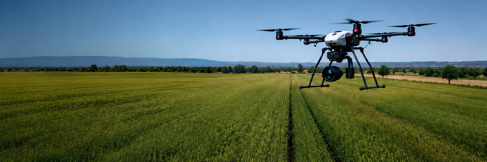
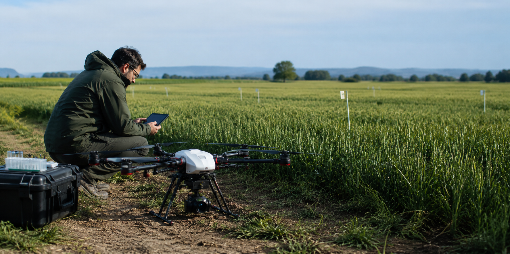
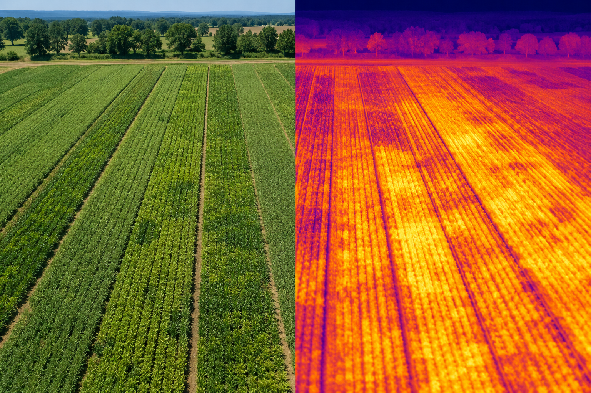
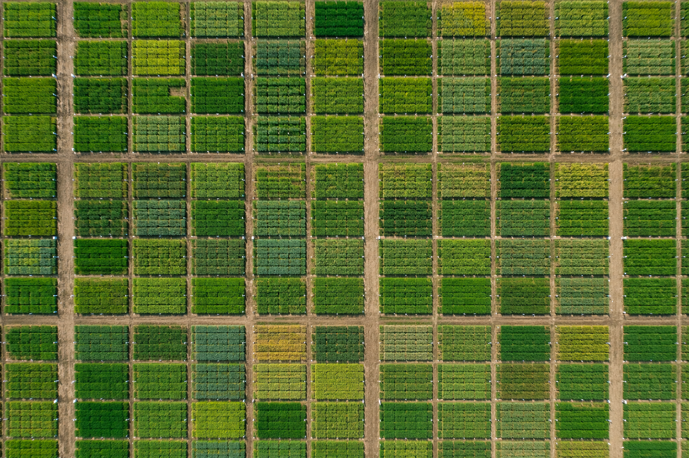
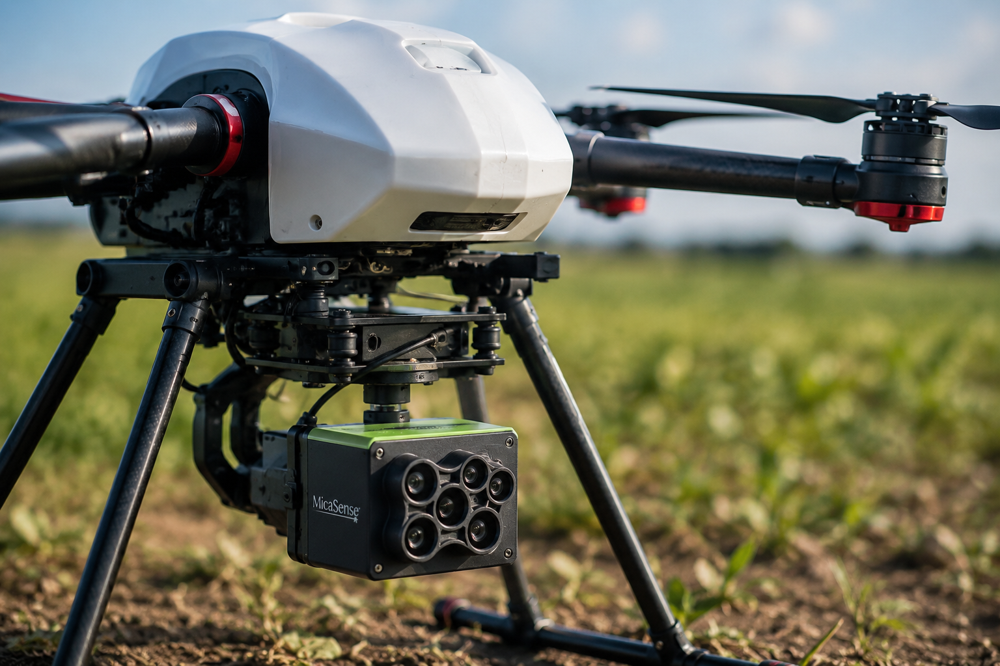

RGB
Fotogrametría, ortomosaicos y modelos tridimensionales.

Adquisición aérea de datos para investigación agronómica
Los sistemas aéreos no tripulados (UAV) constituyen una de las herramientas más versátiles para la adquisición de información de alta resolución en investigación agronómica. Su capacidad para transportar sensores científicos y realizar vuelos planificados sobre parcelas experimentales permite obtener datos espaciales con resolución centimétrica, fundamentales para el estudio del comportamiento de los cultivos.
En la investigación desarrollada por David Gómez Candón, las plataformas UAV se utilizan para integrar imágenes RGB, multiespectrales y térmicas con el objetivo de cuantificar variables biofísicas y fisiológicas de las plantas. La combinación de estas tecnologías facilita el desarrollo de metodologías de fenotipado de precisión, la evaluación del estado hídrico y el análisis espacial de los cultivos.

Las plataformas UAV permiten adquirir información espacial con una resolución muy superior a la proporcionada por otras plataformas de observación. Esta capacidad facilita el estudio de la variabilidad existente dentro de una misma parcela experimental y permite monitorizar el desarrollo del cultivo con un nivel de detalle imposible de obtener mediante satélites.
Además de su elevada resolución espacial, ofrecen una gran flexibilidad temporal. Los vuelos pueden planificarse exactamente en el momento de interés para el experimento, incorporando diferentes sensores científicos y adaptando la adquisición de datos al estado fenológico del cultivo y a las condiciones ambientales.
Gracias a estas características, las plataformas UAV se han convertido en una herramienta esencial para el fenotipado de precisión, la monitorización del estado hídrico, la generación de ortomosaicos de alta precisión y el desarrollo de nuevas metodologías aplicadas a la agricultura digital.
Fotogrametría, ortomosaicos y modelos tridimensionales.
Índices de vegetación y análisis espectral del cultivo.
Evaluación del estado hídrico mediante temperatura del dosel.
Monitorización continua de variables ambientales y fisiológicas mediante estaciones automáticas y sensores distribuidos en campo e invernadero.

Las imágenes adquiridas mediante UAV permiten caracterizar el crecimiento y desarrollo de grandes colecciones de plantas de forma objetiva, rápida y no destructiva, facilitando programas de mejora genética y estudios fisiológicos.


La combinación de sensores térmicos y multiespectrales permite detectar situaciones de estrés hídrico antes de que existan síntomas visibles, proporcionando indicadores objetivos para la investigación y la gestión eficiente del agua.
La generación de ortomosaicos y modelos digitales de superficie facilita el análisis espacial de parcelas experimentales, permitiendo cuantificar la variabilidad del cultivo con elevada precisión.
"Las plataformas UAV amplían la capacidad de observación del investigador, permitiendo transformar imágenes de alta resolución en información científica útil para comprender el comportamiento de los cultivos."